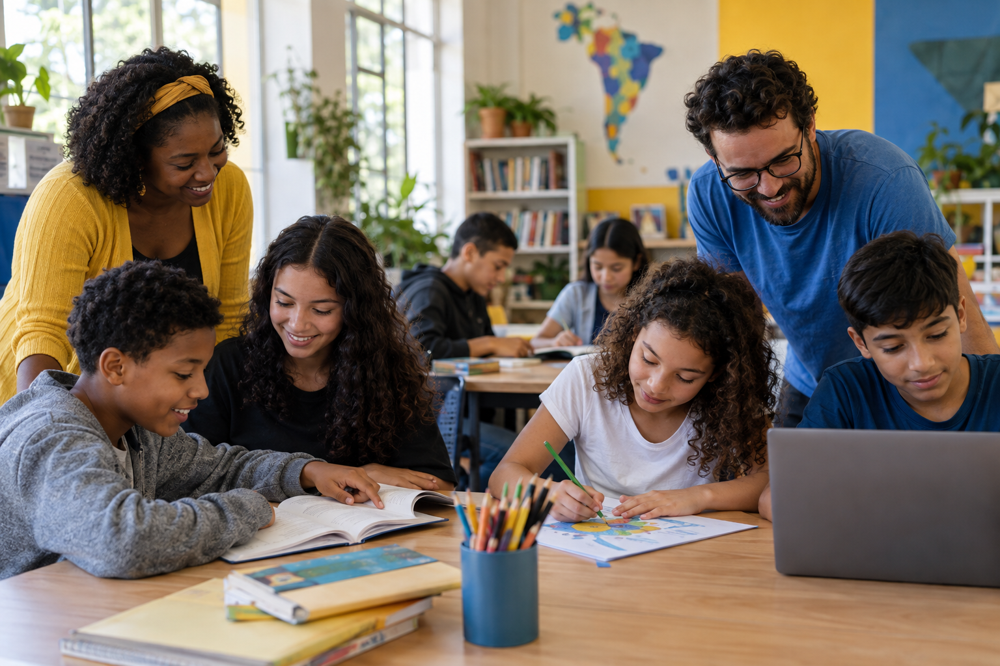

Educação para o Futuro
EducaçãoAulas de reforço escolar, leitura e informática para crianças e adolescentes da comunidade.

Aulas de reforço escolar, leitura e informática para crianças e adolescentes da comunidade.
Arrecadação e distribuição de alimentos para famílias em situação de vulnerabilidade social.
Oficinas culturais e profissionalizantes voltadas à criatividade, autonomia e geração de renda.
Você pode contribuir com os seguintes itens:
Entre em contato pelo e-mail doacoes@novamanha.org .
Os voluntários podem participar das atividades educacionais, campanhas e distribuição de doações.
Faça seu cadastro